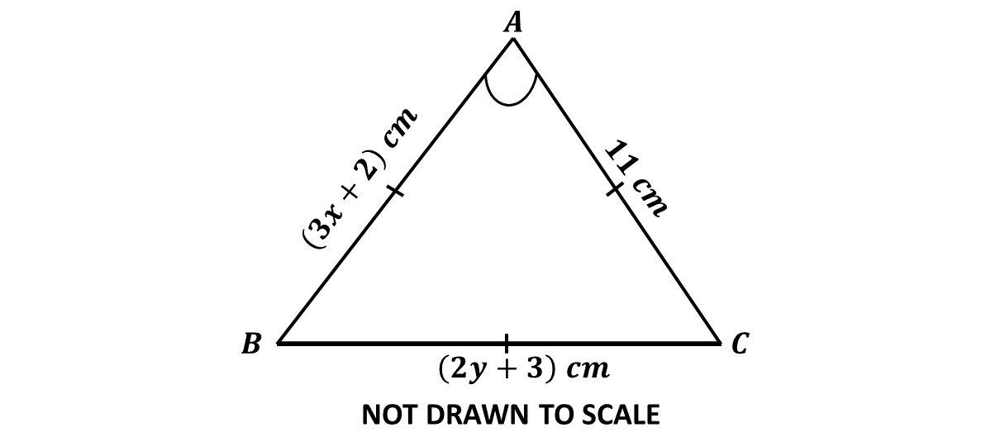

BECE
Year to Practice:
1990
1991
1992
1993
1994
1995
1996
1997
1998
1999
2000
2001
2002A
2002B
2003
2004
2005
2006
2007
2008
2009
2010
2011
2012
2013
2014
2015
2016
2017
2018
2019
2020
2021
2022
2023
2024
PAST QUESTIONS 2022
Time yourself to improve on your speed. You are to use not more than 60 minutes for this section.
Click on the link below when your are ready.
Kindly contact the administrator of the site on WhatsApp or Phone (0208711375) for the link to the test.
Try the questions first, using not more than 15 minutes for each question, and watch the accompanying videos to see how the questions are solved.
Question 1
-
Given that \(P =\) {factors of 36} and \(Q =\) {factors of 54},
\((i)\) List the members in the sets \(P\) and \(Q\).
\((ii)\) Find:
\(\hspace{0.5cm}\) A. \(P \cap Q\)
\(\hspace{0.5cm}\) B. \(n(P \cap Q)\)
\(\hspace{0.5cm}\) Γ. The Highest Common Factor (HCF) of 36 and 54.
-
Write down the next two terms of the sequence 1, 4, 9, ..., ...
-
The median of the ordered set of observations 2, 3, (4\(m\)-3),(3\(m\)+1), 11 and 13 in ascending order is 6. Find the value of m.
Solution
Solution
Solution
Question 2
-
Simplify: \((\frac{1}{3} + \frac{1}{12}) \div (\frac{2}{3} - \frac{5}{8})\)
-
Find the product of \((2x - 3)\) and \((2x + 3)\).
- 
Solution
Solution
In the diagram, \(ABC\) is an equilateral triangle. Find the value of \((x + y)\).
Solution
Question 3
-
Given the relation \(L = \frac{2(m^2 - n^2)}{4(m + n)}\)
\(\hspace{0.5cm} (i)\) simplify \(L\):
\(\hspace{0.5cm} (ii)\) find the value of \(L\) when \(m = 2\) and \(n = 3\).
-
Solve \(\frac{4}{3x} = 7 - \frac{3}{x}\)
-
A salesman gets a commission of \(5\frac{1}{2}\%\) of the value of items he sells. The salesman sells 12 textbooks at GH₵ 25.00 per book, 3 scientific calculators at GH₵ 50.00 per calculator and 8 packets of bic pens at GH₵ 50.00 per packet. Calculate the salesman's commission.
Solution
Solution
Solution
Question 4
-
Fred is \((x - 1)\) years old now. How old:
\(\hspace{0.5cm} (i)\) was he 4 years ago?
\(\hspace{0.5cm} (ii)\) will he be 8 years from now?
\(\hspace{0.5cm} (iii)\) is he now, if his age in 8 years time will be three times his age 4 years ago?
-
The perimeter of a rectangular cocoa farm is 497 km. The length of the farm is \(2\frac{1}{2}\) times the width. Find the:
\(\hspace{0.5cm} (i)\) width;
\(\hspace{0.5cm} (ii)\) length of the farm.
Solution
Solution
Question 5
-
Factorize: \((x-y)(3m+n)-(x-y)(m-2n)\)
-
Given that \(\mathbf{p} = \begin{pmatrix} 2 - 3x\\5 - 2y \end{pmatrix}, \ \mathbf{q} = \begin{pmatrix} -1\\5 \end{pmatrix}\) and \(\mathbf{p} - \mathbf{q} = \begin{pmatrix} 6\\8 \end{pmatrix}\).
Find the value of \((x + y)\).
-
\(\hspace{0.5cm} (i)\) Find the truth set of \(\frac{x - 1}{2} \leq \frac{1}{2} + x\)
\(\hspace{0.5cm} (ii)\) Illustrate the answer in \((i)\) on the number line.
Solution
Solution
Solution
Question 6
-
Copy and complete the table for the relation \(y = 5 - 2x\) for \(-3 \leq x \leq 4\)

-
Using a scale of 2 cm to 1 unit on the \(x\) - axis and 2 cm to 2 units on the \(y\) - axis, draw on a graph sheet two perpendicular axes \(Ox\) and \(Oy\) for \(-5 \leq x \leq 5\) and \(-12 \leq y \leq 12\).
-
\(\hspace{0.5cm} (i)\) Using the table, plot all the points of the relation \(y = 5 - 2x\).
\(\hspace{0.5cm} (ii)\) Draw a straight line through all the points.
-
Using the graph, find the:
\(\hspace{0.5cm} (i)\) value of \(y\) when \(x = -2.6\);
\(\hspace{0.5cm} (ii)\) value of \(x\) when \(y = -2.8\);
\(\hspace{0.5cm} (iii)\) gradient of the line.
Solution
Solution
Solution
Solution
To advertise on our website kindly call on 0208711375 or 0249969740.